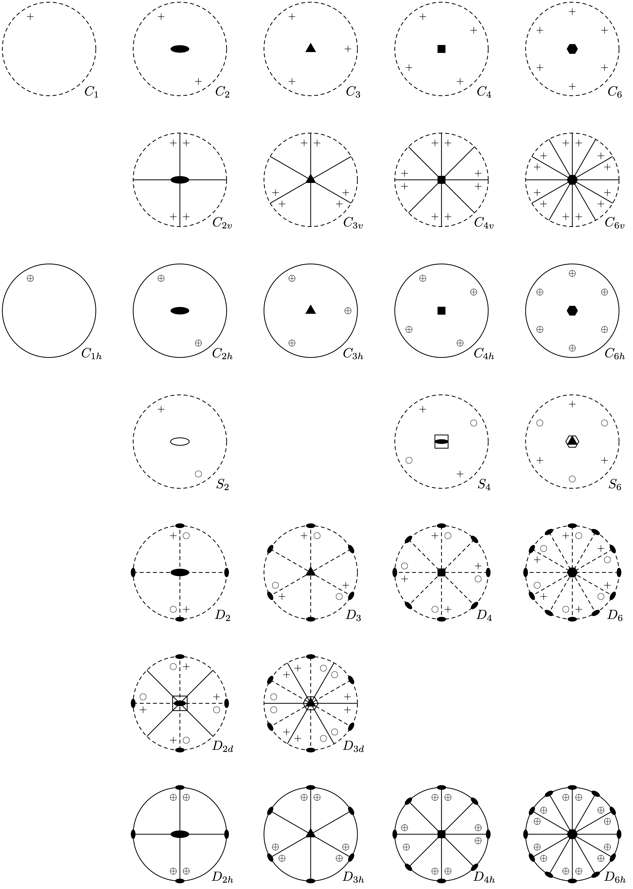
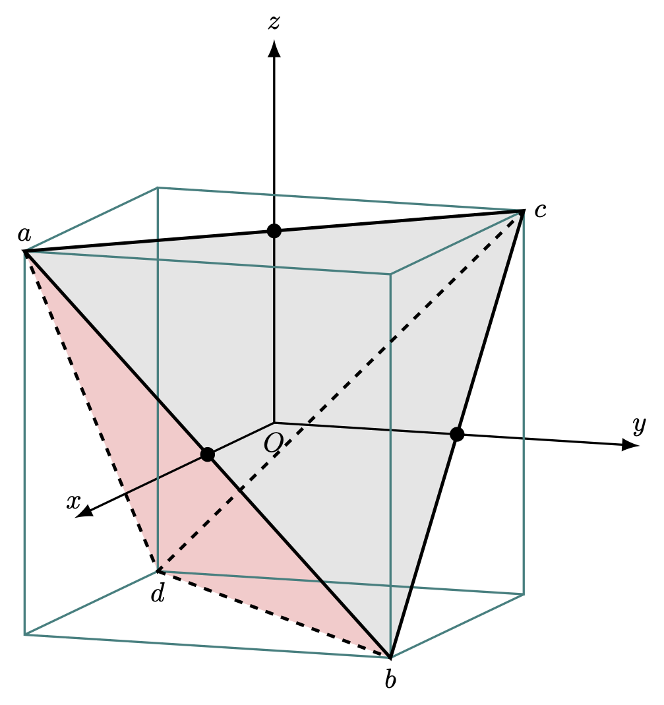
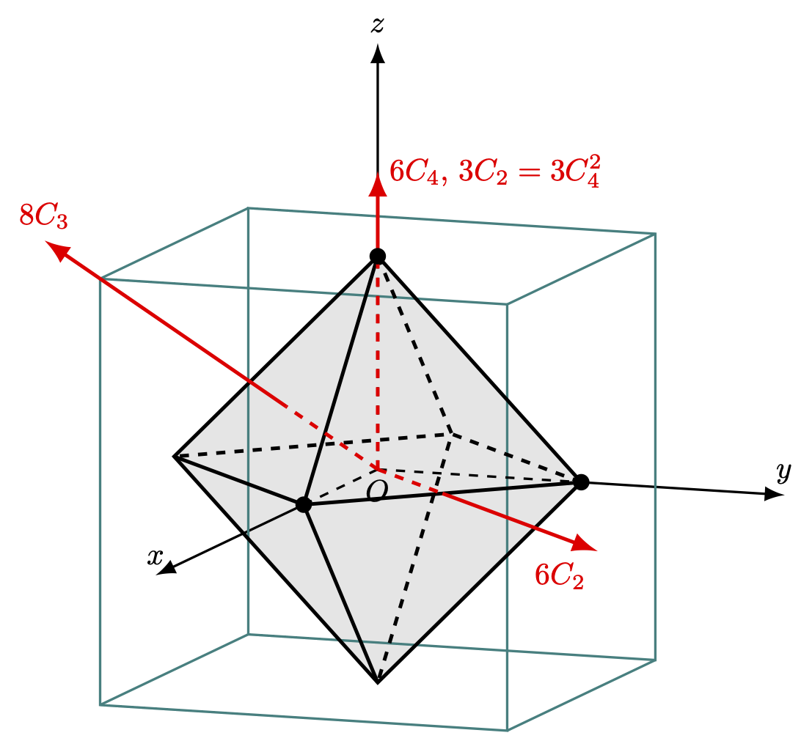

7 점군과 공간군
% %
%\[ \DeclarePairedDelimiters{\set}{\{}{\}} \DeclareMathOperator*{\argmax}{argmax} \]
7.1 결정 대칭 연산
결정은 unit cell 을 결정하는 primitive vector \(\boldsymbol{a}_1,\,\boldsymbol{a}_2,\,\boldsymbol{a}_3\) 에 대해
\[ \boldsymbol{T}=n_1\boldsymbol{a}_1+ n_2 \boldsymbol{a}_2 + n_3 \boldsymbol{a}_3,\qquad n_1,\,n_2,\,n_3\in \mathbb{Z} \]
만큼 translation 시키는 연산 \(T_{n_1,n_2,n_3}\) 에 대해 불변이다. 특정한 회전 역시 결정에 대해 불변인 연산 일 수 있다. 이렇게 어떤 주어진 결정 구조에 대해 불변인 연산을 그 결정에 대한 공간군 (space group of crystal) 이라고 한다. 그리고 공간군중에서 translation 을 \(\boldsymbol{0}\) 으로 놓았을때의 연산을 그 결정에 대한 결정학적 점군(point symmetry of crystal) 라고 한다. 모두 32개의 점군과 230 개의 공간군이 존재한다는 것은 잘 알려져 있다(Tinkham (2012), pp. 51 의 참고 문헌) 결정이 아닌 분자에 대해 생각하자면 여기에는 무한히 많은 점군이 있을 수 있지만 우리가 실제 대면하는 분자의 대부분은 결정학적 점군에 포함된다.
7.1.1 결정학적 점군 구성
주어진 결정에 대한 점군을 구성하는 것은 보통 다음의 순서로 한다.
(\(1\)) 원점을 지나는 축에 대한 회전 대칭(rotational symmetry)을 파악한다
(\(2\)) 원점을 포함하는 평면에 대한 거울상 대칭(reflection symmetry)을 파악한다.
(\(3\)) 반전 대칭(inversion symmetry) 을 파악한다.
반전대칭은 어떤 축에 대해 \(\pi\) 만큼 회전시키고, 그 축에 수직인 평면에 대해 반사대칭을 수행한 것과 같다. 그러나 반전대칭이 많이 등장하므로 이 과정에 일단 넣었다.
이제 연산을 정의하자 \(\boldsymbol{n}\) 을 축으로 하는 \(\theta\) 만큼의 회전은 \(R_\boldsymbol{n}(\theta)\) 라고 하자. \(\boldsymbol{n}\) 에 수직이며 원점을 지나는 평면에 대한 반사 연산을 \(\sigma_{\boldsymbol{n}}\) 이라고 하자. 반전 연산은 \(i\) 라고 하자.
모든 점군을 파악했다면 이제 Caylay table, 즉 group multiplication table 을 파악해야 한다. 여기에 대해 몇가지 사실이 있다.
명제 7.1 (연속 연산 규칙)
(\(1\)) \(R_{\boldsymbol{n}_2}(\theta_2) R_{\boldsymbol{n}_1}(\theta_1)= R_{\boldsymbol{n}_3}(\theta_3)\),
(\(2\)) \(\sigma_{\boldsymbol{n}_2}\sigma_{\boldsymbol{n}_1}= R_{\boldsymbol{n}_3}(\theta_3)\). \(\boldsymbol{n}_3\) 는 \(\boldsymbol{n}_1\) 과 \(\boldsymbol{n}_2\) 에 의해 결정되는 원점을 지나는 평면에 공통되는 직선의 방향이며 \(\theta_3\) 는 \(\boldsymbol{n}_1\) 과 \(\boldsymbol{n}_2\) 가 이루는 각의 두배이다.
(\(3\)) \(\sigma_{\boldsymbol{n}_2}R_{\boldsymbol{n}_1}(\theta_1) = \sigma_{\boldsymbol{n}_3}\), \(\boldsymbol{n}_3\) 는 \(\boldsymbol{n}_1\) 벡터를 포함하는 평면으로 \(\boldsymbol{n}_2\) 와 \(\theta_2/2\) 만큼의 각을 가진다.
(\(4\)) \(R_{\boldsymbol{n}_2}(\pi)R_{\boldsymbol{n}_1}(\pi)= R_{\boldsymbol{n}_3}(\theta_3)\), \(\boldsymbol{n}_3\) 는 \(\boldsymbol{n}_1,\, \boldsymbol{n}_2\) 각각에 수직인 방향이며 \(\theta_3\) 는 \(\boldsymbol{n}_1,\, \boldsymbol{n}_2\) 가 이루는 각의 2배이다.
명제 7.2 (서로 commute 한 연산)
(\(1\)) 같은 축에 대한 두 회전 연산,
(\(2\)) 서로 수직인 방향으로의 두 반사 연산,
(\(3\)) 서로 수직인 축에 대한 \(\pi\) 회전,
(\(4\)) 회전연산과 회전축에 대해 수직인 평면으로의 반사 연산,
(\(5\)) 반전과 회전, 반전과 반사.
7.1.2 Schoenflies 표기법
명제 7.3 (대칭축과 면의 성질)
1a : 두 거울상 대칭면의 교점은 대칭축이며, 두 대칭면 사이의 각이 \(\pi/n\) 일 때 \(n\)-회 대칭이다.
1b : 거울상 대칭면이 \(n\)-회 대칭축을 포함한다면 \(\pi/n\) 의 각마다 다른 거울상 대울상 대칭면이 존재한다.
2a : 두개의 2-회 대칭축이 \(\pi/n\) 의 각도를 가진다면 이 두 축에 대해 수직인 직선은 \(n\)-회 대칭축이다.
2b : 2-회 대칭축 \(X_1\) 이 \(n\)-회 대칭축 \(X_n\) 과 수직이라면 \(X_n\) 과 수직인 2회 대칭축이 \(n-1\) 개 추가로 존재하며 이들은 \(\pi/n\) 만큼의 각을 이룬다.
c : 짝수회 대칭축, 이 축에 수직인 거울상 대칭면, 그리고 반전의 중심 셋중에 둘이 존재하면 나머지 하나도 반드시 존재한다.
7.2 결정학적 점군
주축이 하나만 존재하는 경우를 단순 회전군(simple rotation group), 여러개인 경우를 고대칭군 (group of the higher symmetry)라고 한다.(Tinkham (2012) 에서 사용하지만 다른곳에선 사용하지 않는 것 같다.) 주축이 없는 경우, 즉 대칭이 전혀 없는 경우는 \(C_\infty\) 군이라고 표기한다.
7.2.1 단순 회전군
단순 회전군을 도식화 하는데 평사 투영(streographic prjection) 방법이 많이 쓰이며 단순회전군에 대한 streographic projection 은 아래 그림과 같다.

- 단순 회전군의 주축이 평면에 대해 수직인 원점을 지나는 축이다.
- 평면의 위쪽에 있는 대상은 \(+\), 평면의 아래쪽에 있는 대상은 \(\small \bigcirc\) 로 표기한다. 두개가 겹칠 경우 \(\oplus\) 를 사용한다.
- \(n\)-회 회전 대칭이 있을 때 속이 찬 \(n\) 각형을 두어 회전중심을 표현한다. \(n=2\) 일 경우에는 옆으로 긴 속이 찬 타원으로 표현한다.
- \(\sigma_h\) 대칭이 존재할 경우 단위원을 실선으로, 그렇지 않을 경우 파선(dashed line) 을 사용한다.
- 중심을 지나는 실선은 (실선을 포함하고 평면에 수직인) 반사면을 의미한다.
- \(n\)-회 비정상 회전은 속이 빈 \(n\) 각형 내부에 속이 찬 \(n/2\) 각형을 둔다.
- 주축과 수직인 축으로 \(n\)-회 회전 대칭이 있을 경우 회전축과 단위원의 호가 만나는 점을 중심으로 속이 찬 타원과 같은 회전 대칭 기호를 넣는다.
Wikipedia 의 Molecular Symmetry 을 참고하라.
| 군 | 설명 |
|---|---|
| \(C_n\) | 주축에 대해 \(n\) 회 대칭만 존재하는 경우이다. 순환군으로 아벨군이다. 결정에서 가능한 것은 \(C_1,\,C_2,\,C_3,\,C_4,\,C_6\) 뿐이다. (연습문제 7.1) |
| \(C_{nv}\) | 주축에 대해 \(C_n\) 대칭이 존재하며 \(n\) 개의 \(\sigma_v\) 대칭도 존재하는 군. |
| \(C_{nh}\) | 주축에 대해 \(C_n\) 대칭이 존재하며 \(\sigma_h\) 대칭도 존재하는 군. |
| \(S_n\) | 주축에 대해 \(S_n\) 대칭을 가진 군. |
| \(D_n\) | 주축과 수직한 \(n\) 개의 \(C_2\) 대칭축을 가진 군. \(D_2\) 는 Viergrouppe 와 동형이다. |
| \(D_{nd}\) | \(D_n\) 과 함께 \(n\) 개의 \(C_2\) 대칭축 에서 인접하는 두 대축 사이에 \(\sigma_d\) 거울상 대칭면이 존재하는 군. |
| \(D_{nh}\) | \(D_n\) 과 함깨 \(\sigma_h\) 대칭이 존재하는 군. |
7.2.2 고대칭군

\(T\)
위의 그림 7.2 와 같이 정육면체 내의 정사면체 \(abcd\) 를 생각하자. 정육면체의 각 면은 \(x,\,y,\,z\) 축 중 하나와 수직하며, 정육면체의 중심이 좌표계의 원점이라고 하자.
정사면체의 대칭 연산은 총 12개로 아래와 같다.
- \(E\) : 항등연산
- \(3C_2:\) \(x,\,y,\,z\) 축 각각에 대한 \(C_2\) 대칭
- \(8C_3\) : 정육면체의 4개의 대각선에 대한 \(2\pi/3\) 및 \(4\pi/3\) 회전, 즉 8개의 \(C_3\) 대칭
각 연산에 대해 정사면체 \(abcd\) 가 어떻게 변화하는지는 아래 표 7.2 에 정리하였다. 이 테이블에서 \(C_{2x}\) 는 \(x\) 축에 대한 \(\pi\) 회전에 대해 원래의 \(a,\,b,\,c,\,d\) 가 어느 위치로 변하는지를 순서대로 나열한 것이다. \(C_{3a}\) 는 \(a\) 에서 정사면체의 맞은편 면을 보았을 때의 시계방향으로 \(2\pi/3\) 만큼 시계방향으로 회전시켰을때의 변화이며, \(C_{3a2}\) 는 같은 방향에서 \(4\pi2\) 만큼 시계방향으로 회전시켰을 때의 변화이다.
이제 Caylay table 을 만들어 보자.
\(T\) 의 class 는 다음과 같다. \[
\{E\},\qquad \{C_{2x},\,C_{2y},\, C_{2z} \},\qquad \{ C_{3a},\, C_{3b}, \, C_{3c}, \, C_{3d}\},\qquad\{ C_{3a2},\, C_{3b2}, \, C_{3c2}, \, C_{3d2}\}
\]
\(T_d\)
\(T_d\) 는 \(T\) 에 6 개의 반사면에 의한 대칭과 \(x,\,y,\,z\) 축에 대한 각각 2개의 \(S_4\) 대칭 연산을 포함하는 성분 24개의 군이다. 6개의 반사면은 정사면체의 6개의 변중 한 변을 포함하면서 그 변을 포함하는 면에 수직인 면을 반사면으로 삼는다. 예를 들어 변 \(ab\) 를 포함하며 \(x=1\) 평면에 수직인 면에 대한 반사 대칭을 \(\sigma_{ab}\) 라고 하자. 이런 반사면이 6개 존재하며 \(\sigma_{ab}\) 와 같이 변의 이름을 붙여 호칭할 수 있다. 또한 \(x\) 축으로의 \(S_4\) 대칭을 각각 \(S_{x1}\), \(S_{x3}\) 라고 하자.
이렇게 한다면 총 24개의 원소가 되며 이 군의 클래스는 다음과 같다.
\[ \begin{aligned} E &= \{E\},\\[0.3em] 3C_2 &= \{ C_{2x},\, C_{2y},\, C_{2z}\}, \\[0.3em] 6\sigma_d &= \{ \sigma_{ab},\, \sigma_{ac},\, \sigma_{ad},\, \sigma_{bc},\, \sigma_{bd},\, \sigma_{cd}\},\\[0.3em] 8C_3 &= \{ C_{3a},\, C_{3a2},\, C_{3b},\, C_{3b2},\, C_{3c},\, C_{3c2},\, C_{3d},\, C_{3d2}\}, \\[0.3em] 6S_4 &= \{ S_{x1}, S_{x3},\, S_{y1},\, S_{y3}, \, S_{z1},\, S_{z3}\}. \end{aligned} \]
\(T_h\)
\(T\) 대칭에 \(i\) 대칭이 포함된것이며 24 개의 성분을 갖는 점군이다. 정사면체는 \(i\) 대칭성을 갖지 않는다.
\(O\)

그림에서 보듯이 총 24 개의 성분으로 이루어졌다.
\(O_h\)
\(O\times i\)
\(C_{\infty v}\)
선형 분자.
\(D_{\infty h}\)
For example \(\textrm{CO}_2\)
7.3 Hermann-Morgain 표기볍
우리는 앞서 Schoenflies 표기법(이하 SC 표기법)으로 점군과 공간군에 대해 알아보았다. Schoenflies 표기법은 단일 분자의 대칭을 다루는 데 많이 사용되며 결정학에서는 Hermann-Morgain 표기법(이하 HM 표기법)을 훨씬 더 많이 사용하여 국제 X-선 결정 테이블 에서도 이 표기법을 사용한다. 우선 두 표기법을 비교하면 아래와 같다.
위의 표에 적히지 않은 것은 \(n\) 이후에 숫자 \(k\) 가 올 때는 주축의 \(C_n\) 대칭에 더하여 주축과 수직인 축으로의 \(C_k\) 회전 대칭이 존재한다는 뜻이다. 예를 들어 \(422\) 는 주축에 대해서는 \(C_4\) 회전 대칭, 2종류의 \(C_2\) 대칭이 존재하므로 \(D_4\) 이다.
- HM표기법에서 \(4mm\) 는 \(C_4\) 와 두종류의 반사면이 존재하므로 \(C_{4v}\) 이다.
7.4 결정계와 대칭
| 결정계 | 단위포 (unit cell) | 점군(SC) | 점군 (HM) | 대칭 성분 갯수 |
|---|---|---|---|---|
| 삼사정계 (triclinic) | \(a \ne b \ne c\) \(\alpha\ne \beta \ne \gamma\) |
\(C_1\) \(S_2(C_1)\) |
1 1 |
1 2 |
| 단사정계 (monoclinic) | \(a\ne b \ne c\) \(\alpha=\gamma = \dfrac{\pi}{2} \ne \beta\) |
\(C_{1h}\) \(C_2\) \(C_{2h}\) |
\(m\) \(2\) \(2/m\) |
2 2 4 |
| 사방정계 (orthorhombic) | \(a \ne b \ne c\) \(\alpha=\beta=\gamma = \dfrac{\pi}{2}\) |
\(C_{2v}\) \(D_2(V)\) \(D_{2h}(V_h)\) |
\(2mm\) \(222\) \(2/m,\,2/m\,2/m\) |
4 4 8 |
| 정방정계 (tetragonal) | \(a=b\ne c\) \(\alpha=\beta=\gamma = \dfrac{\pi}{2}\) |
\(C_4\) \(S_4\) \(C_{4h}\) \(D_{2d}(V_d)\) \(C_{4v}\) \(D_4\) \(D_{4h}\) |
\(4\) \(\overline{4}\) \(4/m\) \(\overline{4}2m\) \(4mm\) \(422\) \(4/m\,2/m,2/m\) |
4 4 8 8 8 8 16 |
| 삼방정계 (rhombohedral) | \(a=b = c\) \(\alpha=\beta=\gamma < \dfrac{2\pi}{3} \ne \dfrac{\pi}{2}\) |
\(C_3\) \(S_6(C_{3i})\) \(C_{3v}\) \(D_3\) \(D_{3d}\) |
\(3\) \(\overline{3}\) \(3m\) \(32\) \(\overline{3}2/m\) |
3 6 6 6 12 |
| 육방정계 (hexagonal) | \(a=b\ne c\) \(\alpha = \beta = \dfrac{\pi}{2},\, \gamma = \dfrac{2\pi}{3}\) |
\(C_{3h}\), (\(S_3\)) \(C_6\) \(C_{6h}\) \(D_{3h}\) \(C_{6v}\) \(D_6\) \(D_{6h}\) |
\(\overline{6}\) \(6\) \(6/m\) \(\overline{6}2m\) \(6mm\) \(622\) \(6/m,\, 2/m,\, 2/m\) |
6 6 12 12 12 12 24 |
| 입방정계 (cubic) | \(a=b=c\) \(\alpha = \beta = \gamma = \dfrac{\pi}{2}\) |
\(T\) \(T_h\) \(T_d\) \(O\) \(O_h\) |
\(23\) \(\frac{2}{m}\overline{3}\) \(\overline{4}3m\) \(432\) \(4/m\, \overline{3},\, 2/m\) |
12 24 24 24 48 |
연습문제
연습문제 7.1 결정학적 점군에서 가능한 \(C_n\) 군은 \(n=1,\,2,\,3,\,4,\,6\) 뿐임을 보이자.
(해답). 결정학에서의 병진 벡터 \(\boldsymbol{T}=n_1\boldsymbol{a}_1 + n_2\boldsymbol{a}_2+n_3\boldsymbol{a}_3\) 를 생각하자.
\(C_n\) 대칭축을 \(\hat{z}\) 축으로 잡자. \(C_n\) 회전에 대해 \(\boldsymbol{T}_1\) 이 차례로 \(\boldsymbol{T}_2,\ldots,\, \boldsymbol{T}_n\) 으로 변경된다고 하자. 그렇다면 \(\boldsymbol{t}_{ij}=\boldsymbol{T}_i-\boldsymbol{T}_j\) 는 \(xy\) 평면상에 존재하는 병진 벡터이야 한다. \(T=\{\boldsymbol{T}_{i}-\boldsymbol{T}_j : i\ne j\}\) 가운데 \(0\) 이 아닌 크기가 가장 작은 벡터를 \(\boldsymbol{t}\) 라고 하자. \(\boldsymbol{t}\) 역시 \(\boldsymbol{T}\) 로 표현되는 벡터이며 따라서 \(n_3=0\) 이며 크기가 \(0\) 이 아닌 벡터 가운데 가장 작은 크기의 벡터 이다. 물론 이 크기의 벡터가 여러개 존재 할 수 있으며 이중 하나만 선택한다.
이 벡터를 \(z\) 축을 중심으로 \(2\pi/n\) 만큼 회전시킨 벡터도 \(\boldsymbol{t}\) 와 같은 크기의 벡터여야 하며, \(\|\boldsymbol{t}\|=l\) 이라고 할 때
\[ \|\boldsymbol{t}-\boldsymbol{t}'\| = 2 l \sin \frac{\pi}{n} \]
어야 한다. 그런데 \(\boldsymbol{t}-\boldsymbol{t}'\) 역시 \(T\) 에 포함되므로 \(l\) 보다 크거나 같아야 한다. 즉 \(\sin\left(\dfrac{\pi}{n}\right) \ge \dfrac{1}{2}\) 이어야 한다. 따라서 \(n\le 6\) 이다.
이제 \(\boldsymbol{t}'\) 을 \(2\pi/n\) 만큼 회전시킨 것을 \(\boldsymbol{t}''\) 이라고 하자. \(\boldsymbol{t}'' \in T\) 이며 \(\|\boldsymbol{t}''\|=l\) 이다. 또한 \(\boldsymbol{t}\) 와 \(\boldsymbol{t}''\) 은 \(\dfrac{4\pi}{n}\) 의 사잇각을 가진다. 이로부터
\[ \|\boldsymbol{t}+\boldsymbol{t}''\| = 2l \left|\cos \frac{2\pi}{n}\right| \]
이다. \(\boldsymbol{t}+\boldsymbol{t}''\) 역시 \(xy\) 평면상의 병진벡터 이므로 \(l\) 보다 크거나 같아야 한다. 즉 \(\left|\cos \left(\dfrac{2\pi}{n}\right)\right| \ge \dfrac{1}{2}\) 이어야 한다. \(n=5\) 인 경우 \(\cos(2\pi/5)\approx 0.31 < 0.5\) 이므로 \(n=5\) 는 불가능하며 \(n=1,\,2,\,3,\,4,\,6\) 인 경우는 가능하다.